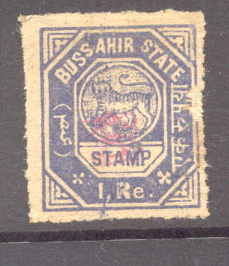
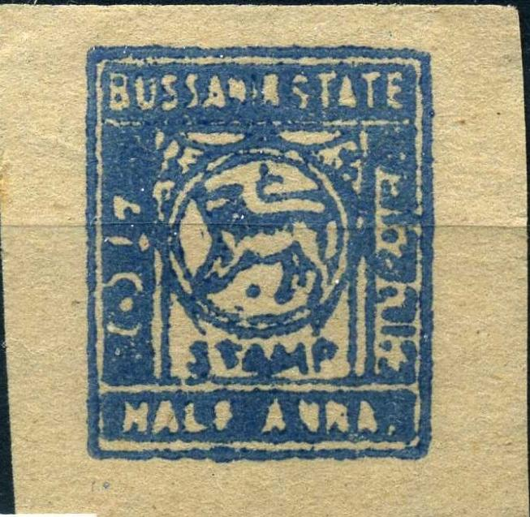
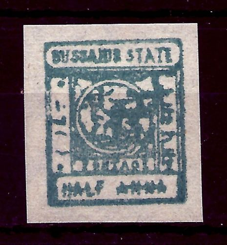

{kind=link}

Note: on my website many of the
pictures can not be seen! They are of course present in the
catalogue;
contact me if you want to purchase it.
Imperforate 1/4 a red (overprint violet) 1/2 a grey (red) 1 a red (violet) 2 a yellow (violet) 4 a violet (violet) 8 a brown (violet) 12 a green (red) 1 R blue (red)
Perforated
1/4 a red (overprint green) 1/2 a grey (red) 1 a red (violet) 2 a yellow (green) 4 a violet (green) 8 a brown (violet) 12 a green (red) 1 R blue (red)
Value of the stamps |
|||
vc = very common c = common * = not so common ** = uncommon |
*** = very uncommon R = rare RR = very rare RRR = extremely rare |
||
| Value | Unused | Used | Remarks |
| Imperforate | |||
| 1/4 a | RR | RR | |
| 1/2 a | RR | RR | |
| 1 a | R | R | |
| 2 a | R | R | |
| 4 a | RR | RR | |
| 8 a | R | R | |
| 12 a | RR | RR | |
| 1 R | RR | RR | |
| Perforated or rouletted | |||
| All values | RR | RR | |
Reprints exist (also in different colors, perforations, papers etc.).
Remainders are often cancelled with "RAMPUR 19 MA 1900
BUSSAHIR STATE" (often with the "1" of
"19" missing and the "M" badly done). They
exist pasted on small pieces of paper with this cancel.
Some crudely printed forgeries exist without monogram; see http://www.princelystates.com/CurrentIssue/ff-04-01b.shtml for images and more details.

Modern forgeries (1980's?), apparently copied from the Stanley
Gibbons catalogue, no monogram. They also exist in bogus colors.
1/4 a red 1/4 a violet 1/4 a brown 1/2 a blue 1/2 a green 1/2 a violet 1 a red 1 a olive 1 a green 2 a orange 2 a olive 2 a yellow 4 a violet 8 a grey 8 a violet 12 a violet 12 a green 1 R red 1 R blue
Value of the stamps |
|||
vc = very common c = common * = not so common ** = uncommon |
*** = very uncommon R = rare RR = very rare RRR = extremely rare |
||
| Value | Unused | Used | Remarks |
| Cheapest types | |||
| 1/4 a red | * | * | |
| 1/4 a violet | *** | *** | |
| 1/4 a brown | *** | *** | |
| 1/2 a blue | ** | ** | |
| 1/2 a green | *** | *** | |
| 1/2 a violet | *** | *** | |
| 1 a red | *** | *** | |
| 1 a olive | R | R | |
| 1 a green | *** | *** | |
| 2 a orange | ** | *** | |
| 2 a olive | *** | *** | |
| 2 a yellow | *** | *** | |
| 4 a | *** | *** | |
| 8 a grey | R | R | |
| 8 a violet | *** | *** | |
| 12 a violet | *** | R | |
| 12 a green | R | R | |
| 1 R red | R | R | |
| 1 R blue | R | R | |
Most likely a reprint (the monogram is too clear!)
Some crudely printed forgeries exist without monogram; see http://www.princelystates.com/CurrentIssue/ff-04-01b.shtml for images and more details.
Modern forgeries (1980's?), apparently copied from the Stanley
Gibbons catalogue, no monogram.

Other modern forgeries.
And some more modern forgeries.
{kind=link}
{kind=link}
{kind=link}
{kind=link}